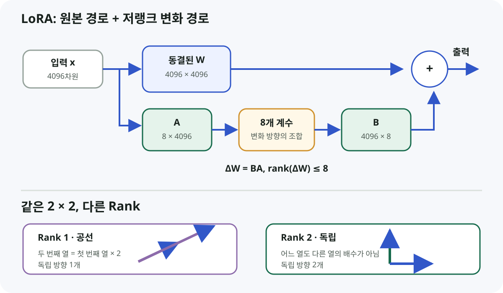

Rank 1
W = [1 2]
[2 4]
Wx = [x₁ + 2x₂]
[2x₁ + 4x₂]
a = x₁ + 2x₂
출력 = [a, 2a]입력이 여러 값으로 바뀌어도 출력은 항상 (a, 2a) 꼴이다. 두 번째 출력 방향은 첫 번째의 2배라 독립적으로 움직이지 못한다.
기존 Weight W와 파인튜닝으로 새로 배울 변화량 ΔW를 분리하고, 왜 ΔW = BA가 학습 파라미터와 메모리를 줄이는지 Rank의 의미부터 연결한다.
사용자가 자기 말과 숫자 예제로 설명한 증거를 기준으로 표시한다. 문서를 읽은 양이 아니라 개념을 재구성하고 계산한 정도다.
W와 새 변화량 ΔW를 구분하고, W를 동결하는 이유를 설명했다.4096 × 4096과 4096 × 8 + 8 × 4096의 파라미터 수를 계산했다.2 × 2 Rank 1·Rank 2 행렬을 출력 방향의 독립성으로 설명했다.A → 8개 계수 → B 흐름과 rank(BA) ≤ 8을 연결했다.α/r, A·B 초기화, 작은 코드로 Shape·학습 파라미터 수를 검증한다.
W의 Forward 경로는 그대로 남고, A → 8개 계수 → B 경로가 저랭크 보정을 만든다. 아래 작은 패널은 행렬 크기와 Rank가 다른 개념임을 보여 준다.일반적인 Full Fine-Tuning은 기존 모델이 가진 Weight W 자체를 수정해 W′로 만든다.
한 Linear Layer의 Weight가 4096 × 4096이면 이 행렬만 해도 16,777,216개 값을 직접 학습해야 한다.
LoRA의 출발점은 기존 모델이 이미 배운 W를 동결하고, 파인튜닝에 필요한 변화만 ΔW로 따로 배우자는 것이다.
그러나 ΔW를 다시 4096 × 4096 전체 행렬로 학습하면 같은 수의 값을 추가로 학습해야 한다. 그래서 LoRA는 변화량을 작은 두 행렬의 곱으로 제한한다.
W′ = W + BA로 생각할 수 있다. 일반적인 LoRA 구현은 보정 크기를 조절하기 위해 W′ = W + αrBA를 사용한다. α/r의 역할은 아직 작은 코드로 확인할 항목이다.열벡터를 입력으로 두는 표기에서 rank r=8이면 다음 Shape을 사용할 수 있다.
A : 8 × 4096
B : 4096 × 8
B × A
= 4096 × 4096| 방식 | 학습할 값 | 파라미터 수 |
|---|---|---|
ΔW 전체 | 4096 × 4096 | 16,777,216 |
| LoRA | (8 × 4096) + (4096 × 8) | 65,536 |
이 단일 정사각 Weight만 비교하면 LoRA가 학습하는 값은 256분의 1이고, 99.609375% 적다. 이 수치는 해당 Weight 하나만 비교한 계산이며 Bias, 다른 Layer, Embedding 등 모델 전체의 비율은 포함하지 않는다.
A: 8 × 4096, B: 4096 × 8, BA로 쓴다. 행벡터를 쓰는 코드나 라이브러리에서는 곱의 순서와 저장 Shape이 전치되어 보일 수 있지만, 4096 → 8 → 4096 저랭크 경로라는 의미는 같다.다음 두 행렬은 모두 2 × 2이지만 Rank는 다르다.
W = [1 2]
[2 4]
Wx = [x₁ + 2x₂]
[2x₁ + 4x₂]
a = x₁ + 2x₂
출력 = [a, 2a]입력이 여러 값으로 바뀌어도 출력은 항상 (a, 2a) 꼴이다. 두 번째 출력 방향은 첫 번째의 2배라 독립적으로 움직이지 못한다.
W = [1 0]
[0 1]
Wx = [x₁]
[x₂]x₁과 x₂는 서로 독립적으로 변할 수 있다. 출력 공간에서 두 개의 독립 방향을 만들 수 있다.
열 관점에서도 같다. Rank 1 행렬의 두 열 [1,2]ᵀ, [2,4]ᵀ 중 두 번째는 첫 번째의 2배다. 반면 단위행렬의 열 [1,0]ᵀ, [0,1]ᵀ은 어느 하나를 다른 하나의 배수로 만들 수 없다.
4096차원 입력
↓ A
8개의 조절 계수
↓ B
8개의 기본 변화 방향을 조합
↓
4096차원 변화B: 4096 × 8의 8개 열은 개념적으로 LoRA가 사용할 기본 변화 방향이다. A: 8 × 4096는 입력을 받아 그 방향들을 얼마나 사용할지 정하는 8개 계수를 만든다.
따라서 ΔW의 결과 Shape은 4096 × 4096이지만, 만들 수 있는 변화는 최대 8개 독립 방향의 조합으로 제한된다.
rank=8이 뜻하지 않는 것W는 그대로 있고, 새로 학습되는 변화량 ΔW만 최대 8개의 독립 방향으로 표현한다.| 크게 줄어드는 것 | 사라지지 않는 것 |
|---|---|
| 학습 대상 파라미터 수 그 파라미터의 Gradient 저장량 Optimizer 상태 메모리 | 동결된 W의 Forward 계산Base Model 가중치 보관 Forward·Backward에 필요한 Activation 메모리 |
LoRA는 기존 4096 × 4096 Weight 연산을 없애는 기술이 아니다. 원본 경로 Wx를 계산하고, 저랭크 경로에서 만든 보정을 더한다. Adapter를 병합하면 추론 시 하나의 Weight처럼 사용할 수 있지만, 학습 중 핵심 절감은 W 전체의 Gradient와 Optimizer 상태를 만들지 않는 데서 나온다.
LoRA는 기존 LLM의 Weight는 그대로 유지하고, 파인튜닝에 필요한 변화량만 작은 수의 독립적인 변화로 제한해 두 개의 작은 행렬로 학습함으로써 학습 파라미터와 관련 메모리를 크게 줄이는 방법이다.